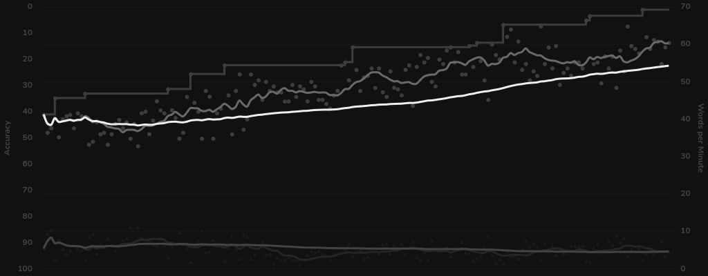
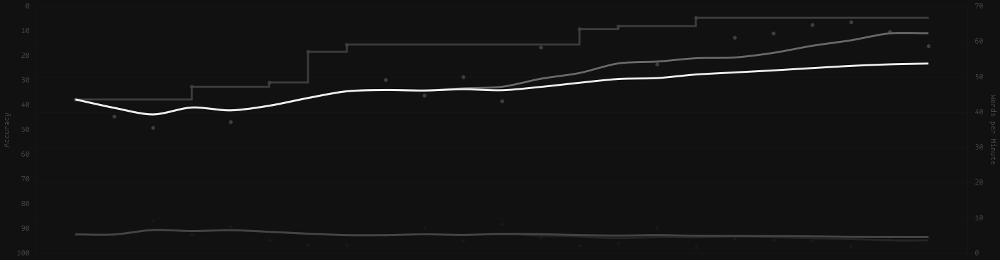

week one
When I decided too go full ergo, apparently I wanted too disrupt
my muscle memory as much as possible. I switched from a 60% with
Colemak with a single modified key to a 40% split ortho with
homerow mods and a lot of swapped hand placements. I've noticed
by far the most difficult habit of mine to break has been my MM
of the Colemak homerow, as I'm constantly performing rolls that
aren't there and reaching for the wrong keys.


week two
my muscle memory has adapted much more in the past week and my
WPM (on a typing test) hovers around 30 wpm. However, my
accuracy is only about 92% :(.

Ironically enough, by far my most missed letters are those on
the home row.

I also did some custom excercises to help with finger placement,
that's why the graph has that spike and then hard drop in both
WPM and accuracy.

month two
Throughout the whole of the first month I made a lot of rapid
progress, but now moving into the second month of learning
engram, its slowed a fair bit. I've still gone up to the high
60s in wpm, but of course im not seeing those huge daily jumps
in speed like in the first few weeks.
One big change I've made since the last update was switching to
monkeytype from keybr, and sprinkling in a few games of
typeracer to see how I stack up against others. I find
monkeytype a lot better for improving my raw speed compared to
keybr, though I am not entirely sure why. Maybe I just like the
layout more XD

month like 3 or 4 or 5 i dont know at this point
Almost half a year into this project (holy fuck lmao) I have
stagnated a little, probably due to the other projects (like
making my own keyboard), fucking with the layout and whatnot,
but I have hit a bit of a plateau of around 70wpm:

You can see a bit of a dip and thats where I swapped to the new
layout (and I also haven't really practiced in a while whoops),
but I'm getting back up to my pre-switch speed, as the new board
fits a lot better to my hands. (No shade to the corne, the
swallowtail is literally just designed to fit my hands XD)